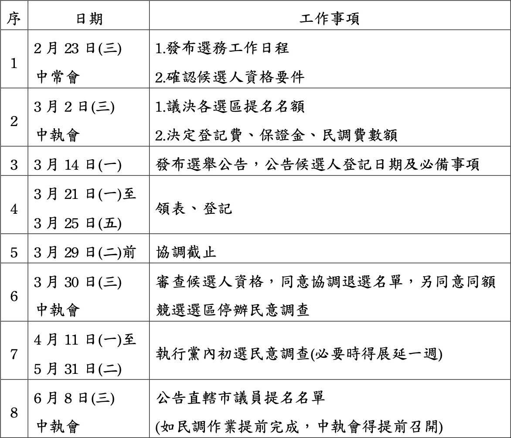
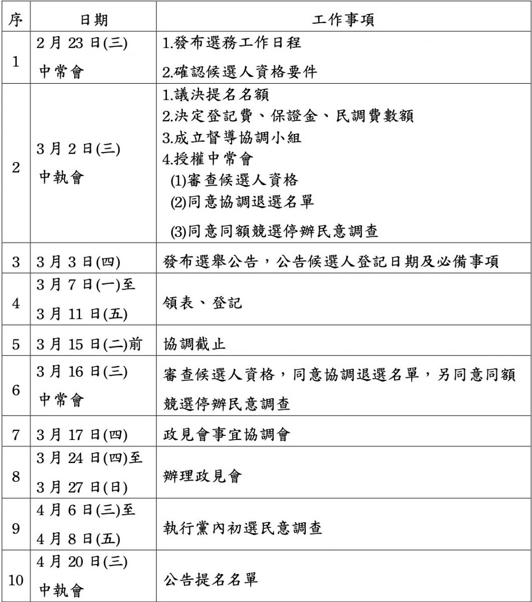

2022-02-23
民主進步黨第十九屆第七十二次中常會新聞稿
民主進步黨今(23)日召開第十九屆第七十二次中常會，會中通過「2022年直轄市長暨縣市長初選民調問卷格式」及「2022年直轄市議員初選民調問卷格式」，通過之民調問卷格式是羅列各種可能的情形。
2022年直轄市長依據「2022年直轄市長暨縣市長提名特別條例」，將採用徵召。縣市長初選民調依據「第一、二、三類公職候選人提名民意調查辦法」第七條，「僅採用『對手對比式』題型」。
會中也通過提請任命2022年直轄市長暨縣市長、直轄市議員初選民意調查委員會委員，成員名單如下：林錫耀秘書長、王智盛教授、林宗弘教授、黎寶文教授、羅承宗教授。
另會中通過「2022直轄市議員提名初選選務工作日程」及「2022年屏東縣長提名初選選務工作日程」，並確認候選人資格要件：第一，入黨連續滿2年，候選人資格之入黨滿2年之計算基準日，依規以公職人員選舉投票日2022年11月26日為準。第二，其餘資格依「公職候選人提名條例」及施行細則之相關規定辦理。
此外，會中通過初選選務工作日程之附帶決議，全文如下：
今日中常會已經通過初選選務時程表，宣示本黨正式進入初選階段，民進黨是一個民主政黨，維護初選的公平性是民進黨團結及持續壯大的基礎。
2022年選舉對策委員會（下稱選對會）由主席蔡英文擔任召集人外，成員還包含副總統賴清德、行政院長蘇貞昌、民進黨立院黨團總召柯建銘、桃園市長鄭文燦、高雄市長陳其邁、交通部前部長林佳龍、新境界智庫副董事長洪耀福、民主進步黨秘書長林錫耀。各個都是民進黨的公共財，他們聲望也是本黨最珍貴的資產。選對會對於投入黨內的初選的同志，都是抱持相同鼓勵的態度，希望大家遵從黨內的初選規定，進行君子之爭，努力爭取人民的支持，壯大民進黨的基礎。在此原則下，選對會不會針對特定初選參選人表態支持，藉以維護民進黨初選之公平性。
據此原則，在今日中常會通過初選時程表起，民進黨中央黨部公告以下幾點原則，要求所有初選參選同志確實遵守：
第一，自即日起，所有初選參選人之文宣品（包含看板、車輛、平面文宣、網路文宣、電視文宣等）不得使用選對會所有成員之照片。
第二，自即日起，所有初選參選人不得透過任何方式公開宣稱，上述選對會任一成員表示支持或唯一支持特定初選參選人。
任何初選參選人違反上述二項規定之一，經檢舉後，中央黨部應立即調查，並將結論呈請選對會做適當之處置。
2022年直轄市議員提名初選選務工作日程，附表如下：

2022年屏東縣長提名初選選務工作日程，附表如下：
